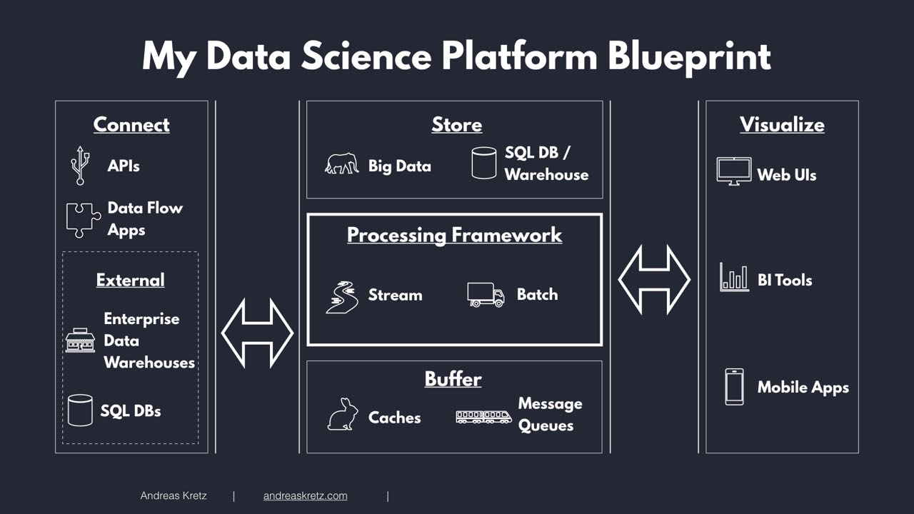

Expertise
*Aware **Novice ***Intermediate ****Advanced
Python
\* :
\** : sqlalchemy, pyspark, argparse, regex
\*** : redis, boto3, pandas, numpy, altair, dask, threading, concurrent
\****: CCXT, logging
AWS
\* : [AWS products - Analytics, Database, Machine Learning](https://aws.amazon.com/products/)
\** : IAM, SNS
\*** : EC2, RDS, CloudWatch, SageMaker, Parameter Store, S3
\****:
Topics & concepts
\* :
\** : System Design, NoSQL, automated testing, command line interfaces, API creation
\*** : documentation
\****: Data Visualization, Financial Inclusion, Decentralized Finance, Fintech, API usage, Agile
Software & Tools
\* :
\** : Docker, Hadoop, Spark, MongoDB, LucidChart
\*** : Bitbucket, Redis, Linux, Git, Jupyter Lab, ConEmu, TradingView, Jekyll static website generator, Sourcetree, Coda, shell scripts, cron scheduling
\****: GitHub, Atom+Hydrogen, MySQL, Asana, HeidiSQL, QlikView, MarkDown
My data science platform Blueprint

Connect
\* :
\** : sqlalchemy, requests, google-api-python-client
\*** : AWS CloudWatch Agent for log collection, SWAGGER API client generator
\****: CCXT, APIs, Oanda
Buffer
\* :
\** :
\*** : Redis
\****:
Process - Stream
\* :
\** :
\*** :
\****:
Process - Batch
\* :
\** :
\*** :
\****:
Store
\* :
\** :
\*** : S3, Redis
\****: MySQL
Visualize
\* :
\** :
\*** :
\****: QlikView, Altair, JupyterLab